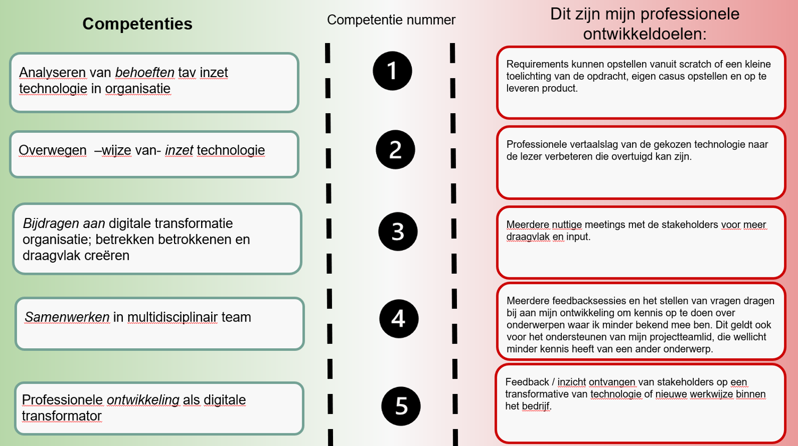

Meer de leiding nemen tijdens gesprekken, meetings, presentaties en workshops
Leerdoel: Verbeteren van mijn leiderschapsvaardigheden door meer de leiding te nemen in gesprekken, vergaderingen, presentaties en workshops. Dit omvat het actief stellen van vragen, het aansteken van discussies, en het aansteken van interactie met het team of publiek. Het doel is om mezelf meer zichtbaar en gehoord te maken, zodat ik effectiever kan bijdragen aan groepsgesprekken en mijn invloed kan vergroten.
Status: Leerdoel succesvol behaald
Waarom dit leerdoel belangrijk is: Leiderschap en communicatie zijn essentieel in de werkomgeving, vooral bij het samenwerken in teams, het geven van presentaties of het leiden van workshops. Het ontwikkelen van deze vaardigheden zorgt ervoor dat je beter in staat bent om richting te geven, initiatieven te nemen, en de discussies te sturen. Dit kan ook je zelfvertrouwen vergroten in professionele omgevingen. Door actief vragen te stellen, toon je interesse in wat anderen te zeggen hebben en stimuleer je de groep om verder te denken. Dit maakt je een effectievere teamspeler en kan bijdragen aan je persoonlijke en professionele groei.
Explanation: Ik ben van mening dat ik dit leerdoel heb gehaald, omdat ik actief heb gewerkt aan het verbeteren van mijn communicatievaardigheden. Gedurende de afgelopen weken heb ik mezelf meer gepositioneerd in gesprekken en vergaderingen door vaker het initiatief te nemen en actief vragen te stellen die de discussie bevorderden. In presentaties en workshops heb ik geprobeerd vaker het woord te nemen door vragen te stellen of actief deel te nemen wanneer vragen werden gesteld.
Door deze aanpak voel ik me zelfverzekerder in het nemen van de leiding en merk ik dat mijn bijdragen steeds meer gewaardeerd worden door zowel mijn medestudenten als docenten. Tijdens de feedbacksessie van de minor werd gevraagd naar 'tips en tops', en ik bracht een belangrijke tip naar voren, die ik vervolgens aan de klas heb uitgelegd. Deze tip werd door veel studenten verder besproken, wat de interactie en diepgang in de sessie bevorderde.
Ik besef dat het stellen van de juiste vragen niet alleen mijn eigen begrip vergroot, maar ook anderen stimuleert om dieper na te denken over bepaalde onderwerpen. Bovendien helpt het me om belangrijke punten te verduidelijken, waardoor ik mijn ideeën op een effectievere manier kan overbrengen.
Ook tijdens mijn werk bij mPrise Agriware merkte ik dat ik in de eerste meetings weinig van mezelf liet horen, omdat ik moeite had om snel met relevante punten te komen of vragen te stellen. Om dit te verbeteren, ben ik beginnen voor te bereiden op de vergaderingen door me in de onderwerpen in te lezen en me van tevoren in te informeren. Deze aanpak heeft mij geholpen om met voorkennis de gesprekken in te gaan, waardoor ik gerichte en waardevolle vragen kon stellen.
Daarnaast heb ik mijn presentatievaardigheden verder ontwikkeld door visuele hulpmiddelen effectiever in te zetten, wat de betrokkenheid van het publiek vergrootte. Hierdoor kon ik makkelijker praten en mijn informatie duidelijker delen. Gedurende de minor heb ik veel presentaties gegeven, en ik kan met vertrouwen zeggen dat deze ervaring heeft bijgedragen aan het behalen van mijn leerdoel. Het herhaaldelijk oefenen en presenteren heeft mijn vaardigheden aanzienlijk versterkt.
Hoewel er nog ruimte is voor verbetering, bijvoorbeeld in het opbouwen van mijn presentaties om nog meer impact te maken, ben ik ervan overtuigd dat ik aanzienlijke vooruitgang heb geboekt in het verkrijgen van meer zichtbaarheid en invloed binnen groepsgesprekken.
Vergroten van technische kennis op het gebied van coderen en programmeren
Leerdoel: Het uitbreiden van mijn technische kennis in coderen en programmeren door actief te werken met verschillende technologieën, waaronder Arduino, webontwikkeling met HTML en CSS en dergelijke. Dit leerdoel richt zich op het verbeteren van mijn programmeervaardigheden, het vergroten van mijn praktische ervaring met hardware en software integratie, en het leren van nieuwe tools zoals Visual Studio Code voor het ontwikkelen van zowel embedded systemen als webapplicaties.
Status: Leerdoel succesvol behaald
Waarom dit leerdoel belangrijk is: Technische vaardigheden in programmeren zijn essentieel voor het werken in veel verschillende industrieën, vooral in de technologische en engineering sectoren. Het combineren van hardware (zoals Arduino en ESP32) met software (zoals webontwikkeling) helpt me een breder scala aan probleemoplossende vaardigheden te ontwikkelen, wat van grote waarde is in de wereld van embedded systemen en IoT. Het verbeteren van mijn HTML en CSS kennis vergroot mijn vaardigheden in webontwikkeling, wat essentieel is voor zowel persoonlijke projecten als voor het bouwen van professionele toepassingen.
Explanation: Ik denk dat ik dit leerdoel gehaald heb, omdat ik actief ben gaan werken met diverse technologieën en tools die mijn kennis op het gebied van programmeren aanzienlijk hebben vergroot. Gedurende de minor heb ik gewerkt met Arduino, ESP32 voor smart technology, waarbij ik zowel hardware als software moest integreren. Dit proces gaf me praktische ervaring in het schrijven van code, het werken met sensoren, en het debuggen er van, wat mijn technische vaardigheden aanzienlijk heeft versterkt.
Daarnaast heb ik veel tijd besteed aan het gebruik van Visual Studio Code. Door deze tool te gebruiken voor zowel Arduino-programmering als webontwikkeling, ben ik beter geworden in het werken met verschillende programmeertalen en het beheren van mijn projecten.
Het werken met het vak Smart Technology was een van de meest waardevolle onderdelen van dit leerdoel. Het ontwerpen van een eigen PCB om circuitcomponenten te verbinden, en het leren over de technische aspecten van elektronische ontwerpen, heeft mijn kennis van hardware aanzienlijk vergroot evenals het 3D printen en het integreren van een database met de code die aansluit op de fysieke hardware.
Wat betreft webontwikkeling, heb ik ervaring opgedaan met het schrijven van HTML en CSS voor het maken een website. Door mijn eigen portfolio website te bouwen, heb ik geleerd hoe ik elementen kan stylen, layouts kan ontwerpen en mijn kennis van front-end ontwikkeling verder kan uitbreiden.
Ik realiseer me dat deze vaardigheden niet alleen waardevol zijn in de context van de minor, maar ook voor mijn toekomstige carrière. Het integreren van hardware en software biedt een breed scala aan toepassingen, en door deze nieuwe kennis te combineren met webontwikkeling, kan ik innovatieve oplossingen ontwikkelen voor verschillende technische uitdagingen.
Ontwikkeling - Smart Me
Tijdens de eerste les merkte ik al snel overeenkomsten met het vak Professional Skills, dat ik eerder heb gevolgd tijdens mijn studie HBO-ICT. Toch onderscheidt Smart Me zich doordat het zich richt op persoonlijke ontwikkeling, los van technische vraagstukken.
Dit thema sprak me erg aan, omdat ik zo kon werken aan vaardigheden zoals effectief functioneren binnen een multidisciplinair team en samenwerken met het bedrijf waar ik mijn project heb uitgevoerd.
In het kader van deze minor heb ik scores toegekend aan verschillende competenties en persoonlijke ontwikkelpunten opgesteld. Zie bijgevoegde foto. Ik heb actief aan deze ontwikkelpunten gewerkt en kan met trots zeggen dat ik mezelf verder heb ontwikkeld. De lessen hebben mij uitgedaagd om mijn comfortzone te verlaten. Dit was noodzakelijk, omdat ik van nature geneigd ben om mezelf minder hoorbaar te maken in groepssituaties. Dit aspect vormde dan ook een belangrijk leerdoel binnen deze minor.
Een van de hoogtepunten was een managementgame, waarbij we in teams samenwerkten en in overleg gingen met andere afdelingen.
Tijdens deze activiteit kreeg ik positieve feedback op mijn gesprekstechnieken en communicatieve vaardigheden. Deze complimenten hebben mij het zelfvertrouwen gegeven om mijn stem vaker te laten horen en actiever deel te nemen aan groepsdiscussies.
Daarnaast hebben we tijdens Smart Me de Caluwé-kleurentest uitgevoerd. De resultaten waren herkenbaar en bevestigden mijn veelzijdigheid: ik draag op diverse vlakken mijn steentje bij. Ook voerden we een DINAMO Quickscan uit op het bedrijf waar ik mijn project heb uitgevoerd.
Dit gaf mij waardevolle inzichten in de kernwaarden van het bedrijf en leverde concrete aanknopingspunten op voor verbetering. Deze scan bleek zeer nuttig voor mijn project bij Mprise Agriware.
Ik beschouw deze methodieken als waardevolle tools die ik in de toekomst opnieuw zou willen toepassen. Voorheen had ik niet eerder dergelijke analyses gebruikt, maar ik waardeer de nieuwe invalshoek die deze aanpak biedt om bedrijven beter te doorgronden en strategische inzichten te verkrijgen.
